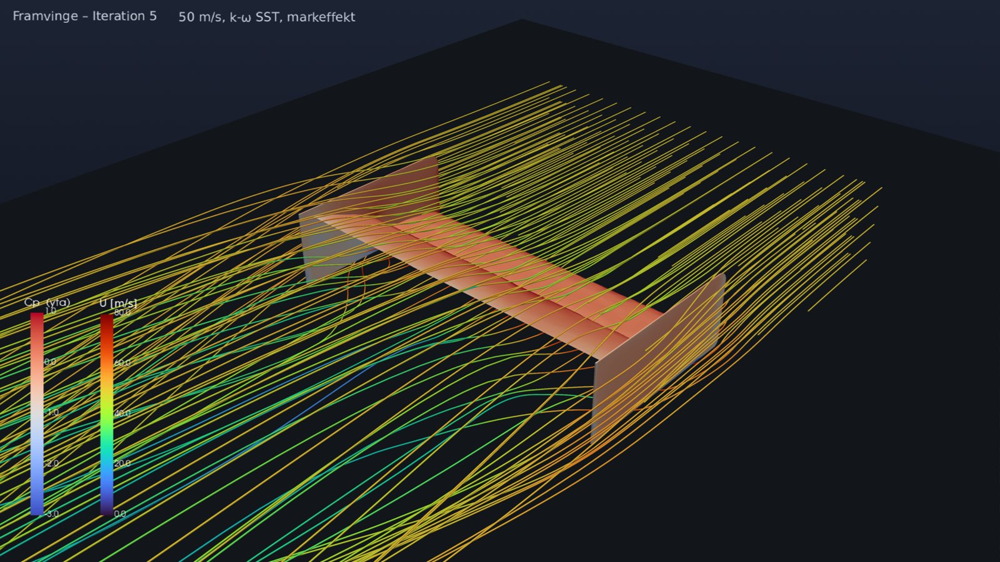

Renault 5 time attack
Aerodynamiska komponenter designade i CAD för att anpassa bilen till time attack-racing. CFD-simuleringar av tryckzoner och luftflöden styrde geometriändringarna mellan varje designiteration.
Jag designar aerodynamiska komponenter i CAD och utvecklar dem med CFD, en iteration i taget, styrd av vad strömningen faktiskt visar. Just nu läser jag Tekniskt basår på KTH med sikte på civilingenjör inom farkost- eller maskinteknik.

En tvåelements framvinge som jag ritade från grunden och utvecklade i fem CFD-iterationer. Varje ändring styrdes av var flödet släppte från vingen.
Aerodynamiska komponenter designade i CAD för att anpassa bilen till time attack-racing. CFD-simuleringar av tryckzoner och luftflöden styrde geometriändringarna mellan varje designiteration.
Ett halvautomatiskt system som loggar 34 näringsvärden per måltid, med mig som systemarkitekt och AI-genererad Python-kod. Datan gav ett 77 % lägre totalt sockerintag.
Mitt intresse för strömningar började med båtar och har vuxit till aerodynamik för racing.
Jag är utbildad marintekniker från Marina läroverket. Mitt gymnasiearbete handlade om hydrodynamik i design av högpresterande båtar. I dag läser jag Tekniskt basår på KTH och lägger min fritid på egna CAD- och CFD-projekt, där jag lär mig genom att bygga, simulera och granska resultaten kritiskt.
Målet är att arbeta som aerodynamiker eller CFD-ingenjör inom motorsport eller flyg.
Yt- och solidmodellering i Siemens NX, med fokus på aerodynamiska profiler och CFD-färdig geometri.
SimScale, OpenFOAM och STAR-CCM+. Inkompressibla RANS-simuleringar, k-ω SST, analys av separation och tryckfält.
Python för efterbehandling och automatisering: VTK och PyVista för strömningsbilder, egna kraft- och separationsmått.
Hör gärna av dig om praktik, sommarjobb, Formula Student eller om du bara vill prata aerodynamik.